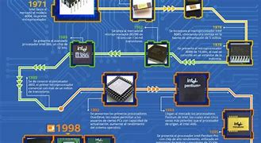
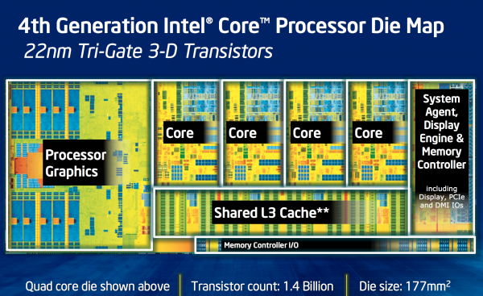
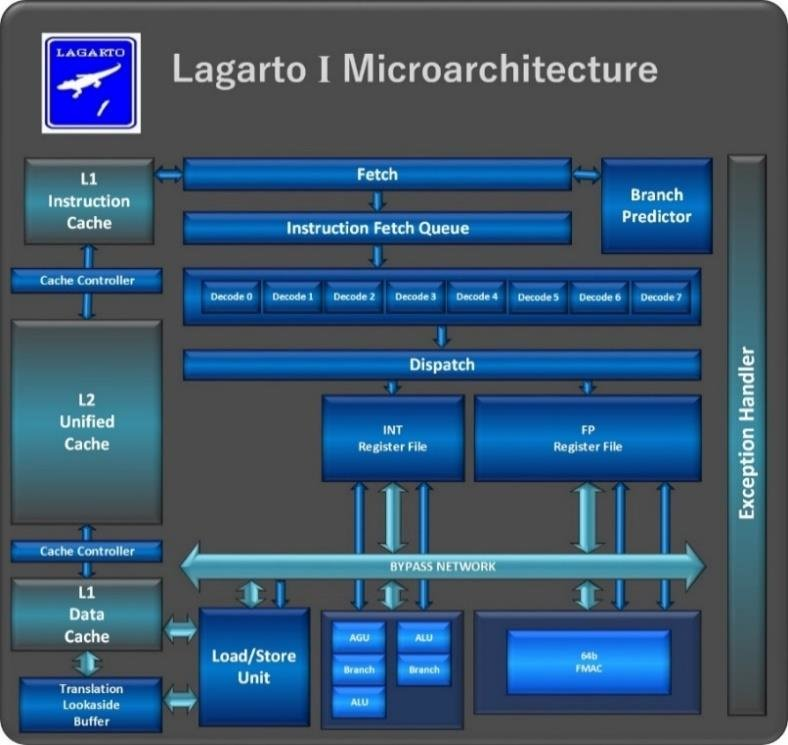

indice
- origenes
- arquitectura
- circuitos
- microarquitectura
 Orígenes: El Amanecer de la Computación
En los albores de la informática, en las décadas de 1950 y 1960, la computación era un campo exclusivo y complejo. Apenas unos pocos cientos de especialistas en todo el mundo poseían las habilidades para operar las máquinas de la época. Los computadores de entonces no eran dispositivos personales; eran gigantescas estructuras que ocupaban varias habitaciones enteras y requerían equipos de múltiples operarios para funcionar correctamente. Su uso estaba casi exclusivamente restringido a grandes universidades, centros de investigación o instituciones militares, siendo completamente desconocidos en los hogares. Es evidente que este panorama ha cambiado radicalmente con el paso de los años. Hoy en día, prácticamente cualquier persona tiene acceso a un ordenador, un smartphone o una tablet, dispositivos sencillos de usar y al alcance de la mano. Pero, ¿cómo comenzó a fraguarse esta era de la información que transformó el mundo? Tras la Era Industrial y en el contexto de la Segunda Guerra Mundial, las potencias mundiales se vieron en la imperiosa necesidad de invertir sus recursos y el talento de sus mejores científicos en el desarrollo de máquinas capaces de procesar información de manera eficiente. Ya sea para descifrar comunicaciones enemigas o para enviar mensajes cifrados a aliados, la urgencia militar impulsó la innovación. Para lograr esto, se requería una estructura y organización que permitiera a estas máquinas no solo procesar información en un formato conocido, sino también almacenar los resultados para su posterior estudio y análisis. Fue en este contexto de necesidad y visión que nació la arquitectura de Von Neumann.
Arquitectura: La Herencia de Von Neumann
La arquitectura de Von Neumann, ideada por el brillante matemático John Von Neumann en la década de 1940 durante un proyecto para el gobierno estadounidense, sentó las bases para el diseño de la mayoría de los computadores modernos. Su misión era proporcionar un esquema de funcionamiento genérico que permitiera a un ordenador ejecutar tareas sucesivamente sin la necesidad de modificar físicamente su estructura con cada nueva tarea. Según esta revolucionaria organización, un computador opera mediante una lista de instrucciones almacenadas en memoria. Un procesador interno se encarga de ir decodificando y ejecutando estas instrucciones una por una. Una vez que una instrucción ha sido finalizada, el procesador pasa al siguiente elemento de la lista y el proceso se repite. Para hacer esto posible, la arquitectura de Von Neumann define tres componentes básicos interconectados:s
- Una Unidad de Proceso (CPU): Que incluye la Unidad Aritmético-Lógica (ALU), encargada de las operaciones matemáticas y lógicas, y la Unidad de Control, que dirige el flujo de datos y coordina las operaciones.
- Dispositivos de Memoria: Utilizados para almacenar información, tanto de forma temporal (como la RAM) como permanente (como un disco duro), incluyendo tanto los programas como los datos que estos manipulan.
La Microarquitectura: El Plano de Organización
La microarquitectura es el diseño específico y la organización de todos estos componentes internos de un procesador. Es el "plano" que define cómo se estructuran las diferentes unidades, cómo se comunican entre sí y cómo se optimiza el flujo de trabajo para ejecutar las instrucciones de la manera más eficiente posible. Por ejemplo, en un diagrama de bloques de un procesador, veríamos cómo se distribuyen las áreas encargadas de realizar operaciones, almacenar instrucciones, o gestionar la entrada y salida de datos. Incluso en su forma más esquemática, es evidente la complejidad inherente a estos diseños. Un aspecto fascinante es que un mismo Juego de Instrucciones (ISA), como x86 o ARM, puede ser implementado sobre diferentes microarquitecturas. Esto significa que Intel y AMD, aunque compartan la ISA x86, diseñan sus propias microarquitecturas (por ejemplo, "Zen" para AMD o "Core" para Intel) para ejecutar esas mismas instrucciones de formas distintas, buscando ventajas en rendimiento, consumo energético o características específicas. Esta competencia impulsa la innovación y la constante evolución en el diseño de procesadores.
La Velocidad del Procesador: El Pulso del Silicio
La velocidad de un procesador se mide en hercios (Hz), lo que indica la cantidad de ciclos de operación que la CPU puede realizar por segundo. Este ritmo lo establece una señal interna conocida como "reloj", que actúa como un metrónomo digital, enviando pulsos regulares que sincronizan todas las operaciones del procesador. Actualmente, no es raro encontrar procesadores que superan los 3 GHz (3 mil millones de hercios), lo que significa que pueden realizar miles de millones de ciclos de reloj por segundo. Este avance representa un salto gigantesco desde los primeros procesadores, que operaban a velocidades muchísimo menores. Sin embargo, la velocidad en hercios es solo una parte de la historia; la eficiencia de la microarquitectura y la cantidad de operaciones que el procesador puede completar por ciclo de reloj (IPC - Instrucciones Por Ciclo) son igualmente cruciales para determinar su rendimiento real.
La Era Multicore: Múltiples Cerebros en un Chip
Una de las evoluciones más significativas en la estructura del procesador ha sido la integración de múltiples núcleos. Al principio, los procesadores eran de un solo núcleo, manejando las tareas de forma secuencial. Hoy en día, es común encontrar CPUs con dos, cuatro, ocho o incluso decenas de núcleos. Cada núcleo de la CPU es, en esencia, una unidad de procesamiento independiente con su propia ALU, registros y cachés, capaz de ejecutar sus propias instrucciones. Esta arquitectura multicore permite que el procesador realice varias tareas de forma verdaderamente simultánea (multitarea paralela) o que una aplicación compleja divida su carga de trabajo entre múltiples núcleos para una ejecución más rápida. Esto ha sido fundamental para el software moderno, que puede aprovechar esta capacidad para un rendimiento superior en tareas como la edición de video, el modelado 3D, los videojuegos y la ejecución fluida de múltiples aplicaciones a la vez.
microarquitectura
Hablar de procesadores es una introducción esencial para continuar hablando de microarquitectura. ¿Qué es una microarquitectura?

Un microprocesador no es sólo un cerebro que procesa información (técnicamente la parte que realiza las operaciones se llama ALU, Arithmetic Logic Unit o unidad aritmético lógica), sino mucho más. Está compuesto de registros (pequeñas memorias donde se almacenan datos), buffers, cachés, unidades de proceso, ALU, y mucho más. Todo esto se fabrica utilizando componentes electrónicos ciertamente pequeños (las arquitecturas actuales de nuestros ordenadores utilizan transistores de 22 nanómetros, 0.000022 milímetros) y no siempre nos encontraremos con todos. Es necesaria una organización y estructuración de todos los componentes a la que se denomina microarquitectura.
La microarquitectura pretende organizar todos los componentes internos de un procesador. Lo que tenéis aquí arriba es un diagrama de bloques de lo que nos encontraremos dentro del procesador, en este caso concreto de un Intel Core 2 Duo. Por ejemplo, la zona amarilla es la encargada de realizar las operaciones y la verde de almacenar las siguientes instrucciones a ser ejecutadas. Como véis es algo bastante complejo, y eso que no es más que un esquema muy general. Uno de los aspectos más interesantes es que un mismo juego de instrucciones (ISA) puede ser ejecutado sobre diferentes microarquitecturas, que es lo que da lugar a las grandes rivalidades que por ejemplo tienen Intel y AMD bajo x86, o Samsung, Apple y Qualcomm con ARM. Sobre el estado actual del mercado y las grandes guerras en lo referente a las arquitecturas hablaremos en posteriores artículos.
BIBLIOGRAFIA